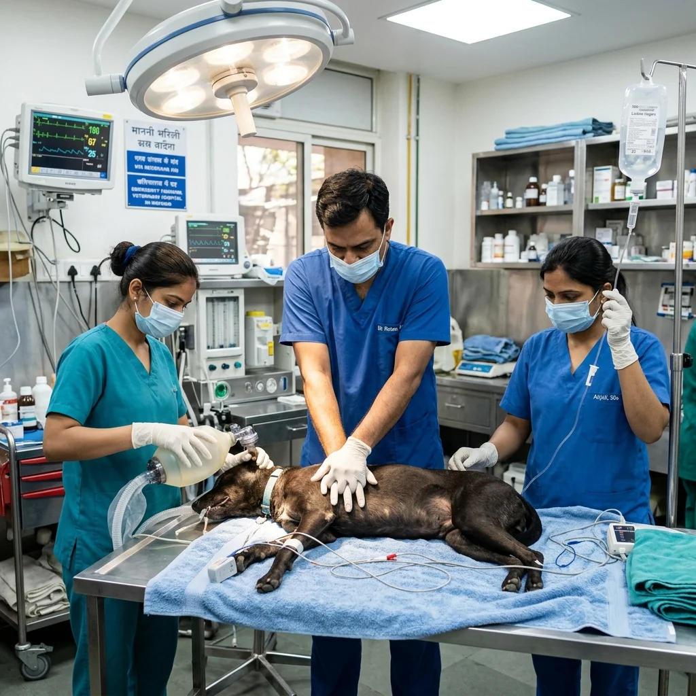
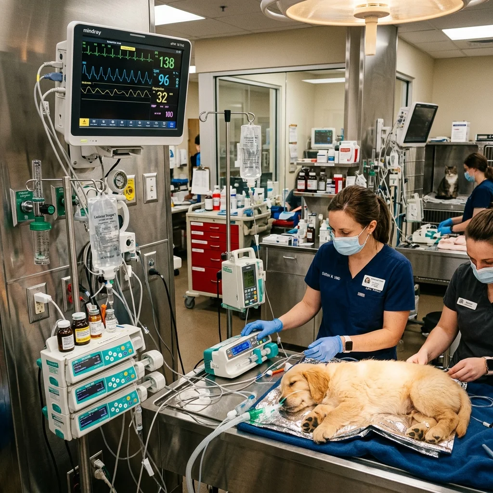
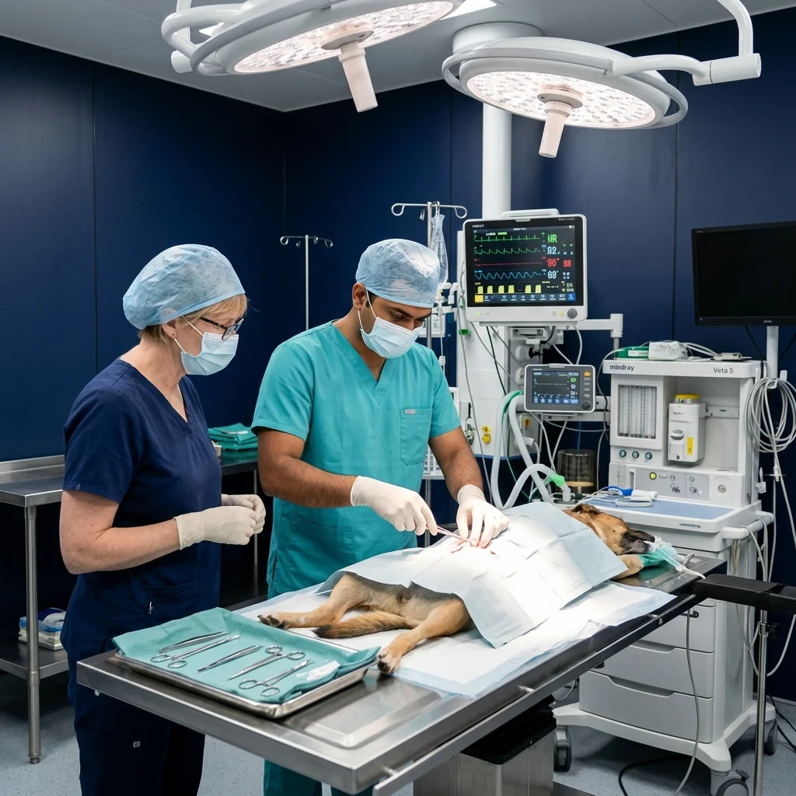

Pet Emergency & Critical Care Stabilization
Gain life-saving confidence in high-pressure emergency triage through hands-on CPR drills, hypovolemic shock fluid resuscitation, trauma stabilization, toxicology protocols, and ICU monitoring.
- RECOVER Guideline CPR & Chest Compression Drills
- Rapid Fluid Resuscitation & Shock Protocols
- Emergency Trauma Triage & Hemorrhage Control
- Acute Poisoning & Toxicity Stabilization
- Endotracheal Intubation & Airway Management

⚡ RECOVER CPR Drills 👨⚕️ Emergency Mentors 🩺 ICU Shock Triage ⭐ 4.9 Student RatingThe High-Stakes Panic of Night Shift Triage
Why sudden collapse, acute poisoning, severe trauma, or cardiac arrest demands rapid, flawless protocol execution.

From Emergency Hesitation to Life-Saving Command
When a critical patient enters your clinic collapsed, dyspneic, or bleeding internally, seconds count. Young clinicians often experience emergency panic:
What You'll Graduate Ready To Do
Develop practical confidence through real clinical exposure, supervised procedures, structured assessments, and hospital-standard veterinary training.

120+ Practical Clinical HoursClinical Transformation
- Observed procedures
- Limited clinical confidence
- Theory-focused learning
- Assisted practical exposure
- Perform emergency procedures
- Make clinical decisions confidently
- Operate diagnostic equipment
- Work inside veterinary hospitals
- Industry-recognized practical competency
Soft Tissue Surgery
Perform routine & emergency soft tissue surgical procedures under sterile OR protocols.
Radiology & Ultrasound
Master digital radiography, abdominal scans, and abdominal FAST fluid detection.
Emergency Medicine
Execute rapid triage, RECOVER CPR algorithms, fluid resuscitation, and trauma care.
Anesthesia & Monitoring
Manage gas anesthesia vaporizers, dosage calculations, and multiparameter vitals.
Clinical Communication
Conduct structured consultations, present care plans, and counsel pet owners ethically.
Professional Certification
Complete practical faculty assessment and earn institutional competency credentials.
Explore Other Training Modules
Structured hands-on modules designed for BVSc interns, fresh graduates, practicing clinicians, and vet assistants.
Veterinary Skill-Up Program
4-Week comprehensive clinical mastery module covering soft tissue surgery, digital radiology reading, ultrasound scanning, and emergency triage.
Soft Tissue Surgery Track
Intensive hands-on procedural workshop covering sterile OR setup, tissue handling, suture patterns, spay/neuter, and intestinal cystotomy closures.
Radiology & Ultrasound Masterclass
Systematic abdominal & thoracic radiograph interpretation alongside hands-on abdominal ultrasound probe handling and FAST scanning.
Pet Emergency & Critical Care
Handling shock, toxic ingestion, cardiac arrest, fluid resuscitation, multiparameter vitals monitoring, and emergency patient triage.
Vet Nurse Foundation Certificate
Foundational practical training for clinic assistants and paravet staff covering animal restraint, surgical scrub support, catheter prep, and sanitization.
Pet Emergency First Aid Workshop
Designed for pet parents, rescuers, and animal lovers to stabilize pets during life-threatening choking, bleeding, or heat stroke emergencies.
Emergency & ICU Curriculum
Intensive 3-day schedule packed with high-fidelity emergency drills and clinical case simulations.
Airway Management, CPR & Resuscitation
Mastering rapid endotracheal intubation, RECOVER CPR algorithms, chest compression ergonomics, and defibrillation protocols.
- Rapid sequence intubation in dyspneic or collapsed canine/feline patients.
- RECOVER guidelines: Basic Life Support (BLS) compression & ventilation rates.
- Advanced Life Support (ALS): Epinephrine, atropine, vasopressin, and naloxone dosing.
- Practical Lab: Simulated cardiopulmonary arrest mannequin CPR drills.
Fluid Therapy, Shock & Vascular Access
Mastering rapid IV catheter placement, intraosseous (IO) access, shock fluid bolus calculations, and blood transfusion protocols.
- Cephalic, saphenous, and jugular catheterization under emergency conditions.
- Crystalloid vs. colloid shock resuscitation: 90 ml/kg (dog) & 45 ml/kg (cat) protocols.
- Crossmatching, blood typing, and whole blood/packed RBC transfusion setup.
- Practical Lab: Vascular cutdown, catheterization, and fluid infusion pump setup.
Trauma, Toxicology & ICU Case Simulations
Managing polytrauma, GDV triage, toxic substance ingestion, snakebite envenomation, and multiparameter ICU monitoring.
- Thoracocentesis, chest tube placement, and emergency abdominal decompressions.
- Toxicology triage: Emesis induction, gastric lavage, activated charcoal, and lipid emulsion.
- Interpreting ECG arrhythmias, blood gas analysis, lactate levels, and pulse oximetry.
- Practical Lab: High-pressure simulated night-shift triage capstone exam.
Emergency Training Delivery
Designed for fast-paced, high-retention scenario learning under senior critical care specialists.
Modern ICU Training Bay
Equipped with multiparameter monitors, oxygen generators, crash carts, and infusion pumps.
Small 10-Doctor Batches
Strictly limited batch size ensuring direct hands-on rotation during scenario drills.
High-Fidelity CPR Simulations
Tactile CPR mannequins with real-time compression depth and rate feedback sensors.
ECC Specialist Mentors
Direct mentoring from senior veterinary emergency and critical care clinicians.
Who Should Join
Essential training for any doctor taking clinic night shifts or emergency triage duties.
Final-Year BVSc Interns
Build confidence to handle emergency night calls during your clinical internship rotations.
Fresh Vet Graduates
Master trauma resuscitation protocols before starting work at busy multi-specialty hospitals.
Night-Shift Clinicians
Sharpen rapid decision-making skills during sudden collapses, toxicity, and cardiac arrest calls.
24/7 Clinic Directors
Standardize emergency triage crash-cart protocols and ICU monitoring across your veterinary team.
Meet Your Critical Care Faculty
Learn directly from specialists who manage high-acuity veterinary emergency cases daily.

Dr. Rajesh Verma
BVSc & AH, MVSc (Medicine / ECC)Emergency Triage & Critical Care Resuscitation Lead.

Dr. Amit Kulkarni
BVSc & AH, MVSc (Surgery)Emergency Trauma Surgery & Hemorrhage Control Specialist.

Dr. Priya Sharma
BVSc & AH, MVSc (Radiology)Emergency AFAST / TFAST Diagnostic Imaging Specialist.
Emergency Care Certification
Upon successful completion of the 3-day intensive workshop and practical scenario exam, graduates receive an official VetNova Certificate of Competency in Emergency & Critical Care Medicine.
Program Fee & Enrollment Options
Transparent pricing with zero hidden fees. Includes all scenario materials and crash cart supplies.
Pet Emergency & Critical Care
3-Day Offline Intensive Emergency Workshop
- 24 Hours intensive ICU bay & mannequin access
- All airway & vascular catheter kits provided
- 1-on-1 Specialist mentor feedback
- Verified course completion certificate
- Emergency protocol quick reference pocket guide
Emergency Workshop FAQs
Everything you need to know about course prerequisites, batch dates, and lodging assistance.
Yes! Final-year interns benefit immensely by gaining emergency confidence before starting their first independent clinic jobs or night shift rotations.
No. CPR compressions and intubation are practiced on high-fidelity simulation mannequins and anatomical models designed specifically for emergency resuscitation training.
Yes, all trainees receive a laminated VetNova Emergency Drug Chart & Fluid Resuscitation Reference Card for quick clinic use.
Yes, we connect outstation participants with verified PG and hotel partners near our Wagholi, Pune learning center.
What Our Alumni Say
Hear from doctors who transformed their emergency triage response confidence.
"During my first night shift after VetNova, a dog came in collapsed from acute GDV and shock. Thanks to the fluid resuscitation and emergency intubation drills with Dr. Verma, I stabilized the patient calmly. This workshop is a lifesaver!"

Master Emergency Triage Confidence
Join the next Pet Emergency & Critical Care batch and transform your clinical night shift response with expert mentorship.